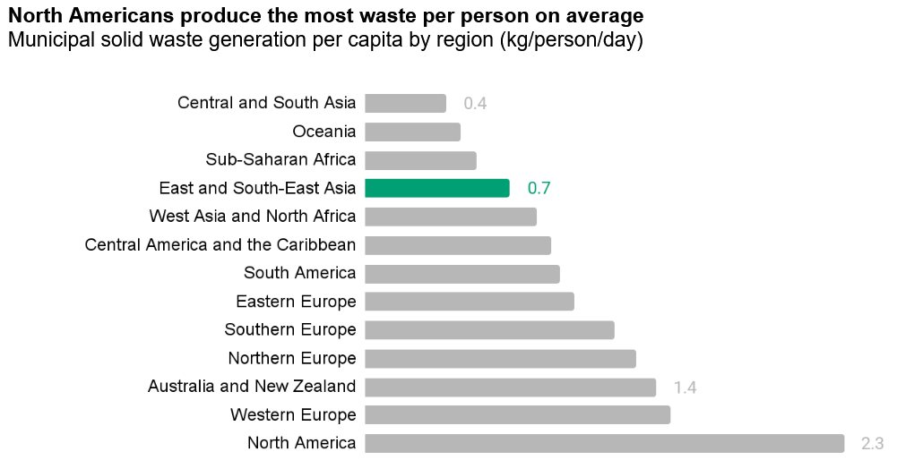

Prepared for SustenyX; first published on LinkedIn
Sustainability is no longer a peripheral concern for businesses; it’s a core value driver. Demonstrating strong environmental, social, and governance (ESG) performance is increasingly crucial for attracting investment and maintaining stakeholder trust. Within the ‘E’ of ESG, waste management plays a pivotal role, and how companies address this issue is closely scrutinized by sustainability ratings agencies.
Waste reduction: more than just recycling
On average, each Malaysian generates 1.18 kg in municipal waste each day, 50% above the global average of 0.78 kg. Waste generation per capita and recycling rates vary significantly across countries. For instance, developed nations often exhibit higher waste generation rates due to increased consumption, while recycling rates are influenced by factors like infrastructure, policy support, and public awareness.

However, the focus on waste should extend beyond just recycling. While recycling is an important component, a truly sustainable approach prioritizes waste reduction at the source. This involves strategies like:
Minimizing packaging: Reducing the amount of material used in product packaging.
Product redesign: Designing products for durability, repairability, and eventual reuse or recycling.
Circular economy principles: Shifting from a linear ‘take-make-dispose’ model to a circular one where resources are kept in use for as long as possible.
SEDG Reporting and Waste Disclosure
The Simplified ESG Disclosure Guide (SEDG) provides guidance for Malaysian SMEs on sustainability reporting. When it comes to waste, companies are expected to provide disclosures beyond stating the amount of waste generated. Key aspects include:
Waste breakdown by destination: At a minimum, companies should distinguish between
Recovery: The amount of waste diverted from landfills through recycling, composting, or other resource recovery methods.
Disposal: The amount of waste directed to landfills or other final disposal methods.
Advanced reporters may provide a detailed breakdown for specific recovery and disposal streams.
Waste breakdown by type: More advanced reporters may report the quantity of waste according to the following aspects:
Hazardous and non-hazardous waste: This distinction is crucial due to the varying environmental and health risks and the need for specialized handling and disposal of hazardous waste.
Sector-specific waste streams: Identifying waste streams specific to the company’s industry (e.g., construction debris, electronic waste) provides valuable context.
Material composition: Reporting the composition of waste (e.g., metals, plastics, paper, organic waste) allows for a more detailed analysis of material flows and potential recovery opportunities.
Methodology and Contextual Information: Clear disclosure of the methodologies used for data collection, measurement, and calculation is essential for transparency and comparability. Contextual information, such as changes in operations or reporting boundaries, should also be provided.
Waste management strategies: Companies should articulate their strategies for waste reduction, reuse, and recycling. This includes setting targets, implementing programs, and tracking progress.
How Ratings Agencies Assess Waste Management
For listed companies, strong ESG ratings are not just a matter of compliance but a strategic imperative, unlocking access to broader capital markets, enhancing reputation, and attracting increasing investor scrutiny in a landscape where sustainability is paramount.
Ratings agencies use various metrics and indicators to assess a company’s waste management performance. These may include:
Landfill Diversion and Performance:
Agencies may evaluate performance using metrics such as the waste diversion rate, which reflects the percentage of waste diverted from landfills. A higher diversion rate indicates a stronger commitment to minimizing environmental impact and maximizing resource utilization.
Agencies may also normalize the amount of waste generation against metrics such as units of production and revenue, which allows for comparison across companies and industries.
Waste Reduction Strategies and Planning: Agencies assess the comprehensiveness of a company’s waste management approach. They may look for
evidence of waste-related policies and waste audits
concrete action plans to reduce waste generation
implementation of effective recycling programs
investments in R&D to minimize waste, etc.
Other aspects:
Companies may undertake independent verification to increase confidence in their reporting.
Quantified targets can demonstrate a commitment to tangible improvement.
Agencies also monitor for incidents of environmental non-compliance related to waste management.
Conclusion
Effective waste management is a critical component of sustainability performance for Malaysian businesses of all sizes. By adhering to globally accepted reporting requirements and demonstrating a commitment to waste reduction, reuse, and recycling, companies can improve their sustainability ratings, enhance their reputation, and contribute to a more sustainable future.